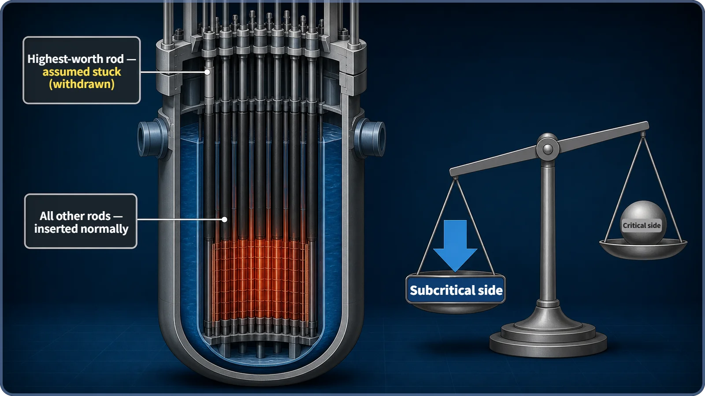

Reactor Kinetics & Reactivity · 114
One More Brake on the Hill — Why Reactors Need a Shutdown Margin
Designers assume the strongest control rod fails to go in. The remaining rods must still shut the reactor down for certain.
The shutdown margin is the reactivity margin that keeps a reactor reliably subcritical even if the single most effective control rod sticks and never goes in. It is the single failure criterion applied to shutting a reactor down with control rods, and it must be confirmed before every startup.
What if one rod gets stuck?
When a reactor scrams, its control rods drop into the core in an instant. Gravity does the work, so the scram functions even if electricity is lost, and within a very short time the core becomes subcritical. But what if one of those rods catches partway and never makes it all the way down? Can the remaining rods still shut the reactor down for certain? The concept that answers that question is the shutdown margin.
Parking on a hill: is one brake enough?
On flat ground, Park and the brake are enough. On a steep hill, a careful driver thinks, "What if one of the brakes doesn't hold at all?" So on top of the main brake they set the parking brake, and if needed put a chock under a wheel. Even if one device fails completely, the rest must keep the car firmly in place.
Reactor shutdown is designed with the same mindset. Designers ask: "What if the single most powerful rod, the one that lowers reactivity the most, gets stuck and cannot be fully inserted? Can the remaining rods still hold the reactor subcritical, a state in which the neutron population cannot sustain itself and steadily dies away?" The margin that lets them answer "yes" is the shutdown margin.
What exactly does the shutdown margin measure?
The shutdown margin is the reactivity margin by which the remaining control rods can still make the reactor reliably subcritical, even assuming the worst single failure: the one rod with the greatest reactivity worth fails to insert and stays withdrawn.
The optimistic assumption "every rod goes in normally" is never used. The standard is the deliberately pessimistic assumption that the strongest rod is missing. In nuclear safety this philosophy is the single failure criterion: in any safety system, the overall safety function must be maintained even if one component fails. The shutdown margin is that principle applied to shutting the reactor down with control rods.
Shutdown margin = |reactivity with all control rods inserted| − |reactivity of the single strongest rod|
The negative reactivity left after subtracting the strongest rod's share must be enough to keep the reactor subcritical, and must exceed the minimum value set for that reactor. Minimum values in plant technical specifications differ with reactor type, core design and operating conditions.
How it's checked in the core
Each control rod contributes a different amount to the core's overall reactivity, its control rod worth; rods near the center of the core, where neutrons are most active, generally have higher worth. The calculation picks the single highest-worth rod, assumes it is stuck, and checks whether the remaining rods alone can still reliably hold the reactor subcritical.
The check is done under the conditions that leave the core the least margin, for example when xenon, a fission product that strongly absorbs neutrons, has not yet built up or has already cleared out. The specific conservative conditions differ by reactor type and plant technical specifications.

Terms that sound alike but aren't
| Term | What it is | Relation to shutdown margin |
|---|---|---|
| Excess reactivity | Positive (+) reactivity loaded to make up for fuel burnup and keep the reactor critical | Opposite direction and purpose |
| Control rod worth | Reactivity one rod or bank can provide | An ingredient of the calculation |
| Single failure criterion | General design philosophy for safety systems | The broader principle it applies |
| Critical / subcritical | The state the reactor is in now | Shutdown margin is a margin calculated in advance |
Three common misconceptions
"The shutdown margin is the sum of all the rods' worths." No. It is that total minus the share of the single highest-worth rod; the full sum would overstate the margin.
"With a shutdown margin in place, a stuck rod is no problem." The margin guarantees safe shutdown even in that worst case; a rod that actually sticks still has to be investigated and repaired.
"The shutdown margin tells you how fast a scram happens." No. Rod fall speed is a separate design requirement; the shutdown margin concerns the reactivity margin once the scram is complete.
Why it matters
The shutdown margin must be confirmed by calculation or measurement before startup, and again whenever fuel is reloaded or the core's condition changes. If it falls short of the required minimum, limiting conditions for operation forbid starting the reactor or running above a certain power; the exact wording differs by plant and regulator. At the design stage, the number, layout and worth of the rods are chosen so that margin remains even if the strongest rod sticks in the worst position. Margins like this, stacked one on another, form part of defense in depth.
Key takeaways
Shutdown margin = |reactivity with all rods in| − |reactivity of the strongest rod|, and it must exceed a set minimum. It concerns the margin left after a scram, not the scram's speed, and it is rechecked as a condition for starting up and operating the reactor.